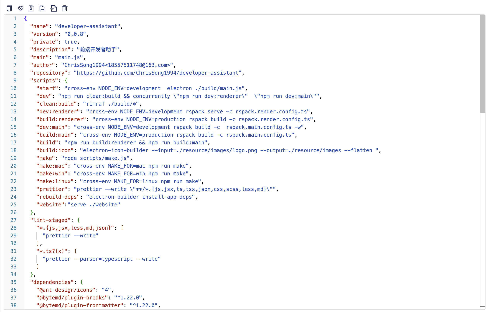
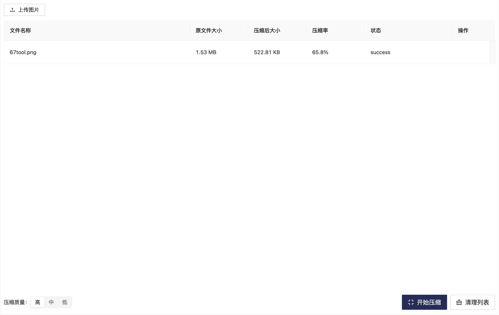
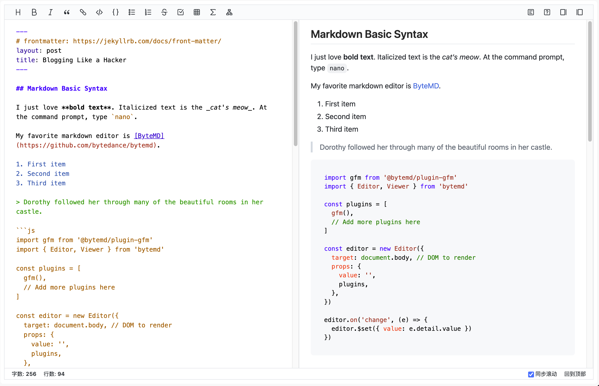
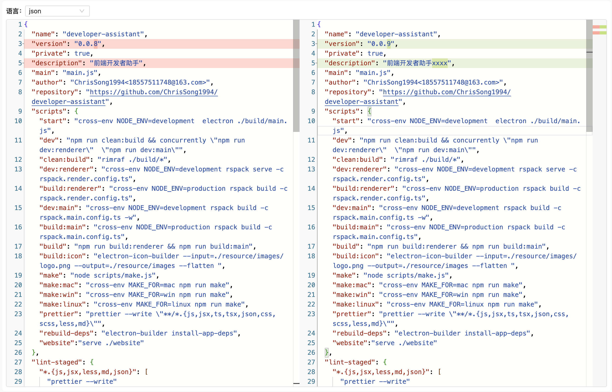
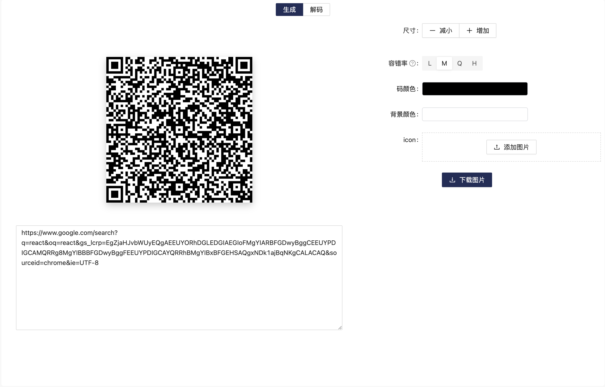
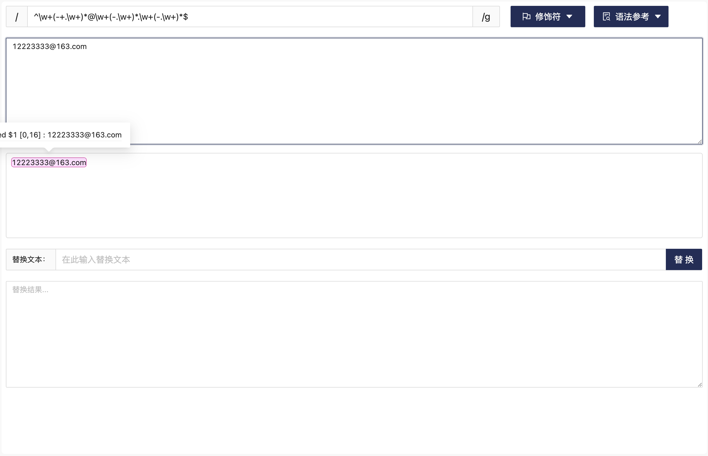
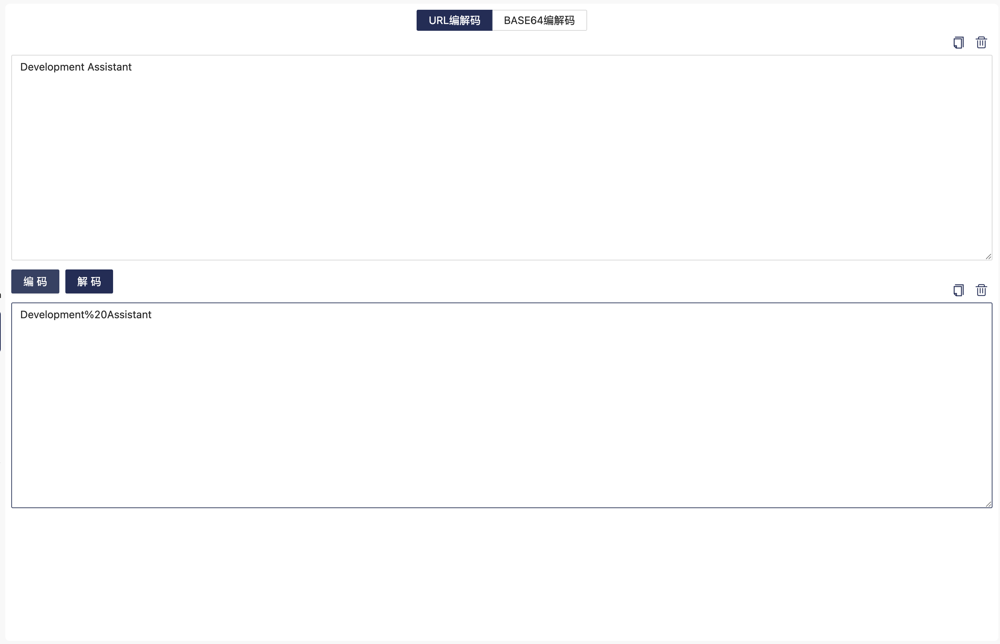
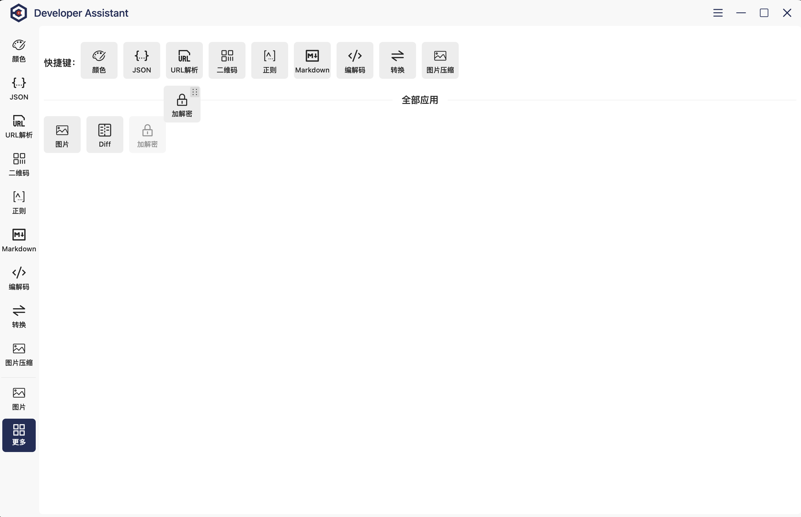

Json 处理
支持 Json 格式化、压缩、美化 等操作。

颜色拾取
支持拾取颜色，并转换为十六进制、RGB、HSL 等格式。

图片压缩
支持压缩图片，提供多种压缩选项，支持批量压缩。

Markdown编辑
支持 Markdown 格式化、预览、导出等操作。

文本对比
支持文本对比，支持多种语法高亮对比。

二维码
支持二维码的生成和解码。

正则工具
支持正则表达式测试、验证、文本替换等操作。

编解码
支持 Base64 编解码、URL 编解码等操作。

工具集合
支持侧边栏自定义，拖拽排序，添加常用工具，方便快捷。